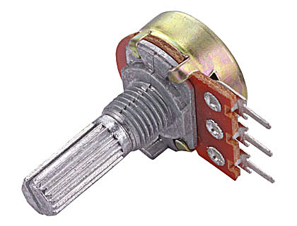
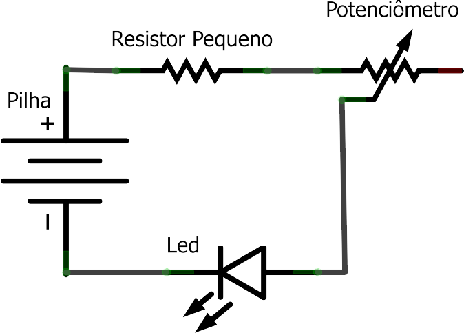
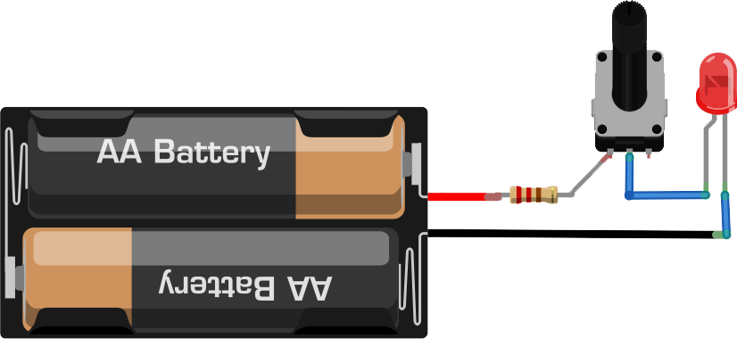
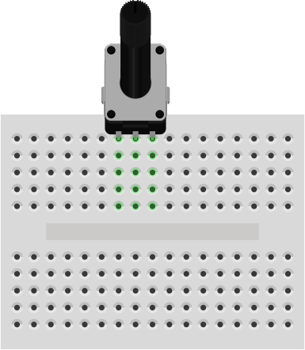
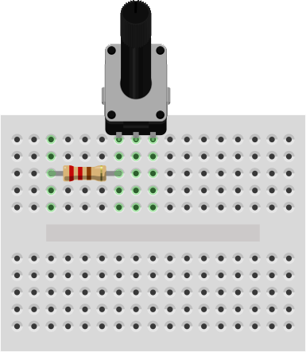
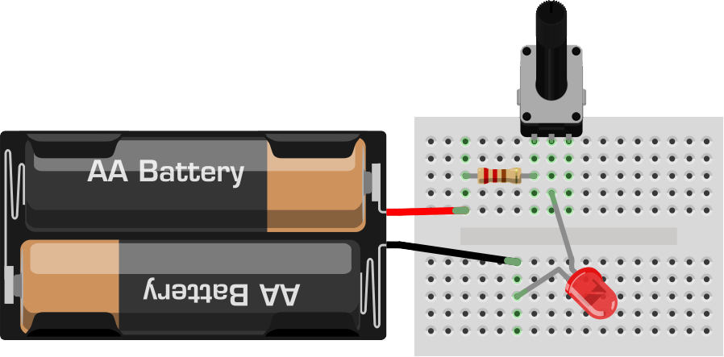
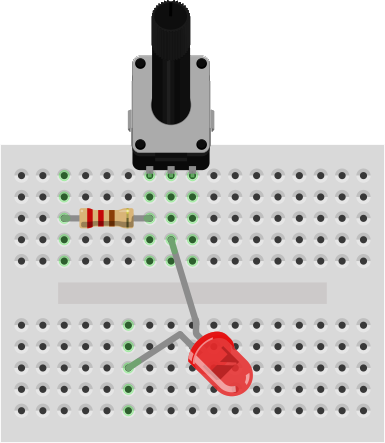

// sobre o componente
O que é o Potenciômetro?
O potenciômetro é um sensor resistivo mecânico. Funciona como um resistor que pode mudar de valor — girando a haste, você altera quanto o componente resiste à passagem de energia.
Tem três terminais: dois nas extremidades e um no meio. Se você usasse os dois extremos, teria o valor máximo de resistência sem poder variar. Por isso usamos o pino do meio + um pino extremo: girando a haste, o pino do meio se desloca, mudando a resistência.
Você já viu isso antes: os controles de volume de rádios antigos e os botões de guitarra funcionam com potenciômetro.
Atenção importante: quando a haste vai ao máximo para um lado, a resistência fica zero — como se não houvesse resistor. Para não queimar o LED, adicionamos um resistor fixo pequeno em série.
Nunca remova o resistor fixo do circuito. Se o potenciômetro chegar a zero sem o resistor fixo, o LED queimará.
Esse é o princípio de funcionamento dos dimmers de iluminação que controlam o brilho de lâmpadas em residências e teatros.

// materiais necessários
O que você vai precisar
// montagem passo a passo
Mãos na massa

O esquemático mostra o potenciômetro (símbolo de resistor com seta) em série com um resistor fixo e o LED. O resistor fixo garante uma resistência mínima mesmo quando o potenciômetro está no zero.

Aqui está a visualização do circuito completo com os componentes físicos. Note o potenciômetro com a haste voltada para fora da placa.

Encaixe o potenciômetro na placa com a haste voltada para fora (para você poder girar). No exemplo das imagens a haste aparece para dentro para facilitar a visualização, mas na prática real, haste para fora.

Ligue o resistor pequeno na primeira perna do potenciômetro. Esse resistor garante que, mesmo com o potenciômetro no zero, o LED não vai queimar.

Perna maior do LED no pino do MEIO do potenciômetro. Perna menor em outra trilha. Fio vermelho no resistor fixo (entrada do potenciômetro). Fio preto na perna menor do LED.

Gire a haste do potenciômetro para os dois lados e observe o brilho do LED mudar. Diminuindo a resistência = mais energia = LED mais brilhante. Aumentando a resistência = menos energia = LED mais apagado.
✓ Resultado esperado
Girando a haste do potenciômetro, o LED deve aumentar e diminuir de brilho gradativamente. Na posição mínima (com o resistor fixo garantindo proteção), o LED fica bem fraquinho mas não apaga completamente.
Se não funcionou:
- Refaça as conexões conferindo cada imagem do passo a passo
- Troque os componentes por outros do kit (podem ter vindo com defeito)
- Verifique se as pilhas estão carregadas
- Peça ajuda de um adulto se necessário